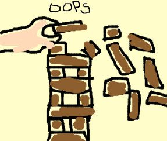

About Dmitry:
- https://github.com/darkdimius/
- doing PhD at EPFL
- previously worked on ScalaBlitz (up to 24x faster collections)
- since March 2014 building on Dotty under supervision of Martin.
- since March 2015 working on Dotty Linker and supervising others working on Dotty.
Scala has lots of flexible features and attempts to combine many powerful ideas
With great power comes great
responsability to shoot oneself in the
foot
Today is not about head-scratching puzzles
(Although we may sneak the odd one in here or there)
Specifically: Which of these puzzlers are the result of essential vs. accidental complexity in the language?
And: Which, if any, might we be able to eliminate in future?
The end of Scala Puzzlers?
Don't worry, we're ready ;-)
http://dottypuzzlers.com
Ideally, we would like to have our cake and eat it too

We would like a language that is expressive, elegant and avoids counterintuitive behaviour
Is this possible?
Or is it inevitable that, in a language with sufficient expressive power and a non-trivial feature set...
...there will always be interactions that result in behaviour that the developer does not expect?
Perhaps it makes more sense to talk about which areas of complexity are an unavoidable price to pay for the power a language offers...
...as compared to "weirdness" that is purely a result of specification or implementation quirks
...or of features that, in hindsight, caused more problems than they were worth
TL;DR
Essential complexity: counterintuitive behaviour that is an (almost) inevitable result of the interaction of desirable language features
Accidental complexity: surprising behaviour that results from implementation quirks, specification "grey areas", or language features that are no longer considered relevant

But some people made use of those Pandora's boxes
These are all "opt-in" choices...
...and typically you only opt-in after it goes wrong
for the n-th time 